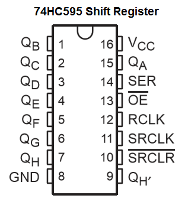

74HC595 Shift Register
El chip de registro de desplazamiento es un elemento electrónico capaz de adquirir un flujo de datos en serie desde uno de sus PIN (PIN de datos), almacenar estos datos y exponerlos en sus 8 PIN de salida (Q0, Q1, …Q7).
